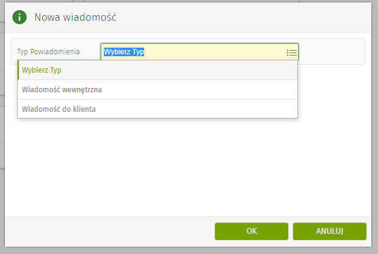

Dokumentacja tworzenie wiadomości e-mail
Etap tworzenia
Aby utworzyć nową wiadomość e-mail klikamy w zębatkę w lewym górnym rogu a następnie w przycisk "Nowa wiadomość"
Po kliknięciu w "Nowa wiadomość" wyskoczy nam okienko z wyborem typu wiadomości

Wybierając wiadomość do klienta pojawi nam się okienko wiadomości automatycznej które będzie zawierać pole kontrahenta dzięki któremu będziemy w stanie wybrać adres docelowy zadeklarowany na osobach kontaktowych kontrahenta.
W przypadku gdy wybierzemy wiadomość wewnętrzną zamiast pola kontrahent pojawi się pole operator dzięki któremu będzimy mogliwybrać adres email przypisany do operatorów programu.
Po wybraniu typu wiadomości w pierwszej kolejności mamy możliwość wyboru wcześniej zdefiniowanego szablonu wiadomości. Po wybraniu szablonu w wiadomości podstawią się nam informacje z szablonu w odpowiednie pola. Następnie mamy możliwość zaznaczyć checkbox'a 'Czy Wysyłać Automatycznie'. Po zaznaczeniu tego pola pokażą się nam dwa następne z data kiedy wiadomość ma zostać wysłana oraz pole z godziną o której wiadomość ma zostać wysłana. W polu 'Od' możemy wybrać zdefiniowany w programie adres e-mail z którego zostanie wysłana wiadomość. Pola tytuł i treść podstawią się automatycznie z szablonu natomiast mamy pełną możliwość ich edycji w trakcie tworzenia wiadomości.
Jeśli chcemy utworzyć wiadomość i wysłać ją samodzielnie to tworzymy nową wiadomość w taki sam sposób jaki został opisany wyżej natomiast nie zaznaczamy pola 'Czy Wysyłać Automatycznie'. Następnie po kliknięciu przycisku zapisz wiadomość od razu zostanie wysłana.